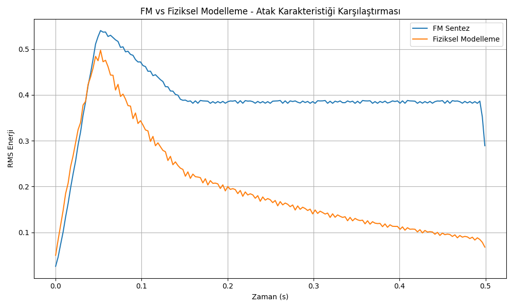

Bu rapor, FM (Frekans Modülasyonu) sentezi ve fiziksel modelleme sentezi yöntemlerini karşılaştırmak amacıyla yapılan deneysel çalışmanın sonuçlarını içermektedir. Her iki yöntem de aynı temel frekansa (440 Hz - A4 notası) sahip sesler üretmek için kullanılmış ve sonuçlar çeşitli açılardan analiz edilmiştir.
FM sentezi, bir taşıyıcı dalganın frekansını başka bir dalga (modülatör) ile modüle ederek ses üretir. Bu çalışmada, temel FM sentezi için aşağıdaki parametreler kullanılmıştır:
FM sentezinin matematiksel formülü:
Burada: - fc: Taşıyıcı frekans - fm: Modülatör frekans - β: Modülasyon indeksi - A: Genlik
Fiziksel modelleme sentezi, gerçek enstrümanların fiziksel özelliklerini matematiksel olarak modelleyerek ses üretir. Bu çalışmada, Karplus-Strong algoritması kullanılarak bir tel modeli oluşturulmuştur:
Karplus-Strong algoritması, bir gecikme hattı ve alçak geçiren filtre kullanarak titreşen bir telin davranışını simüle eder. Algoritmanın temel adımları:
İki yöntemin ürettiği dalga formları arasında belirgin farklar gözlemlenmiştir:
FM sentezinin dalga formu daha düzenli ve periyodik bir yapı gösterirken, fiziksel modelleme sentezinin dalga formu daha karmaşık ve doğal bir yapıya sahiptir. Bu, fiziksel modellemenin gerçek enstrümanların karmaşık titreşim davranışlarını daha iyi yansıttığını göstermektedir.
Spektrogramlar, iki yöntemin frekans içeriğindeki farklılıkları açıkça göstermektedir:

FM sentezi, daha belirgin ve düzenli harmonik yapıya sahiptir. Fiziksel modelleme ise daha zengin bir harmonik içerik ve zamanla değişen bir spektral yapı göstermektedir. Özellikle yüksek frekanslardaki harmoniklerin sönümlenme davranışı, fiziksel modelleme sentezinde daha doğal bir karakteristik sergilemektedir.
Harmonik analiz, iki yöntemin ürettiği seslerin harmonik yapısındaki farklılıkları göstermektedir:

Spektral merkezoid, sesin "parlaklığını" veya "ağırlık merkezini" gösteren bir ölçüdür:

Atak karakteristiği, sesin başlangıç evresindeki davranışını göstermektedir:

Frekans spektrumu, seslerin frekans bileşenlerini göstermektedir:

| Özellik | FM Sentez | Fiziksel Modelleme |
|---|---|---|
| Hesaplama Verimliliği | Yüksek | Orta-Düşük |
| Parametre Kontrolü | Basit, ancak sezgisel değil | Karmaşık, ancak daha sezgisel |
| Doğallık | Düşük-Orta | Yüksek |
| Spektral Zenginlik | Yüksek, ancak yapay | Yüksek ve doğal |
| Atak Karakteristiği | Yapay, keskin | Doğal, kademeli |
| Uygulanabilirlik | Geniş yelpazede elektronik sesler | Akustik enstrüman simülasyonları |
FM Sentez şu durumlarda tercih edilmelidir: - Elektronik, metalik veya sentetik sesler üretmek istendiğinde - Hesaplama kaynakları sınırlı olduğunda - Geniş bir spektral içerik yelpazesi gerektiğinde - Hızlı ve keskin atak karakteristikleri istendiğinde
Fiziksel Modelleme şu durumlarda tercih edilmelidir: - Akustik enstrümanların gerçekçi simülasyonları gerektiğinde - Doğal atak ve sönüm karakteristikleri istendiğinde - Sezgisel parametre kontrolü önemli olduğunda - Gerçekçi artikülasyon ve ifade özellikleri gerektiğinde
FM Sentez: - Modülasyon indeksi arttıkça, harmonik içerik zenginleşir ve ses daha parlak hale gelir. - Taşıyıcı/modülatör frekans oranı, üretilen harmoniklerin yapısını belirler. Harmonik oranlar (1:1, 1:2, 2:1 gibi) daha müzikal sesler üretirken, harmonik olmayan oranlar daha metalik ve çan benzeri sesler üretir.
Fiziksel Modelleme: - Sönümleme faktörü, sesin süresini ve harmoniklerin sönümlenme hızını belirler. Düşük sönümleme değerleri daha uzun süren sesler üretirken, yüksek değerler daha kısa süreli sesler üretir. - Germe faktörü, telin esnekliğini simüle ederek harmoniklerin frekans dağılımını etkiler. Düşük germe faktörleri daha esnek bir tel davranışı göstererek harmoniklerin hafifçe uyumsuz olmasını sağlar, bu da piyano gibi enstrümanlardaki doğal uyumsuzluğu (inharmonicity) simüle eder.
Bu çalışma, FM sentezi ve fiziksel modelleme sentezi yöntemlerinin karşılaştırmalı analizini sunmaktadır. Her iki yöntemin de kendine özgü güçlü ve zayıf yönleri bulunmaktadır.
FM sentezi, hesaplama verimliliği ve geniş spektral içerik üretme yeteneği ile öne çıkarken, fiziksel modelleme sentezi, doğal ses üretimi ve sezgisel parametre kontrolü açısından avantaj sağlamaktadır.
Sonuç olarak, ses sentezi yöntemi seçimi, üretilmek istenen sesin türüne, kullanılabilir hesaplama kaynaklarına ve kontrol parametrelerinin sezgiselliğine bağlı olarak yapılmalıdır. İdeal bir ses sentezi sistemi, her iki yöntemin de güçlü yönlerini birleştiren hibrit bir yaklaşım kullanabilir.
Rapor Tarihi: 29.05.2025